Google Play services v7.8 ki release mai ye saholat di gae hai k aap nae Mobile Vision APis ko istemaal kar saktai hain jismai chehrai ko Pechannai (Face Detection) ki APIs b shamil hai jiski waja sai aap ab images aur videos mai sai chehron kai tassurat(Emotions), unkai barai mai tafseelat(facial features) aur dosri maloomat ko istemaal kar saktai hain. Ye Codelab kotlin par banai gae hai.
Face Detection (Chehrai ko Pehchanna) ab android ki FaceDetector.Face API. sai bht agai hai. Isai banaya gya hai insanon kai chehron ko Images aur videos mai bethter treeqai sai pehchan kr un mai tabdeeli(Editing) krnai k lia asani sai. Ye salahiyat rakhta h chehron(Faces) ko mukhtalif zavion(Orietations) pai pehchanai ki islia agar ksi tasweer mai sar agar thora tirchai zavia p ho tou bhe ye usai pehchan sakta hai. Iskai elava ye kuch khusosiyat aur jesa k ankhen, naak aur honton kai kinarai bhe pechan sakta hai.
Shuru krai sai qabal apkai pas madarja-zail zrori chezen honi chaheyain:
- Android Studio
- Aik Android Device(Mobile) jo k Android kai 4.2.2 version sai uper ya brabar ho ya Phir aik Android emulator jo k Android Studio mai he mojood hoga.
- Android studio ka naya version jismai SDK (Software Development Kit) tools component bhe shamil ho. Isai aap hasil kar saktai hain SDK manager sai jo k Android studio mai he mojood hai.
- Google Play Services SDK jo k Android studio kai SDK manager mai he mojood hai.
Is marhalai mai aap seekhigai kesai aik bunyadi app create ki jati hai jismai aap agai jaa k Sign In ka code bhe shamil kringai.
Nae App Bananai ka treeqa
Android Studio kholen aur Start a new Android Studio project par click kren.
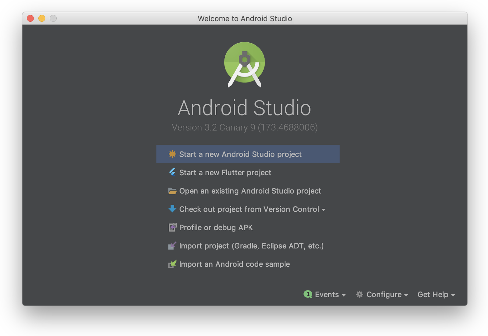
Click krnai kai bad apkai samnai Create Android Project ki window aige. Is window mai Include Kotlin Support pai lazmi click kren.
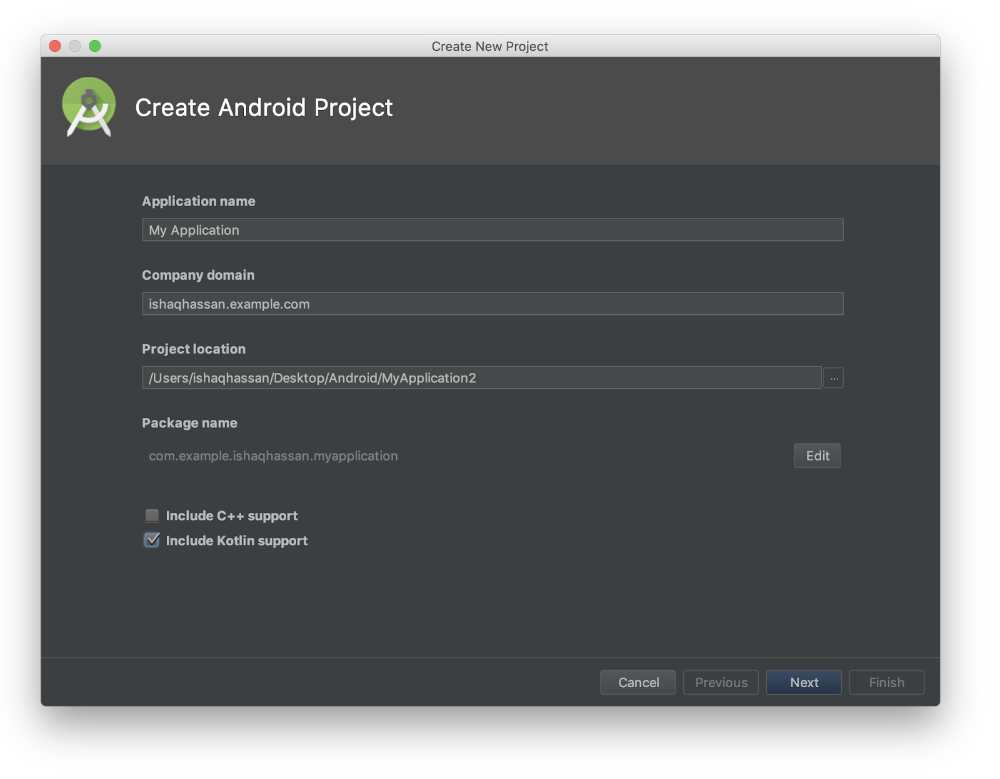
Iskai bad Next kai button par click kren.
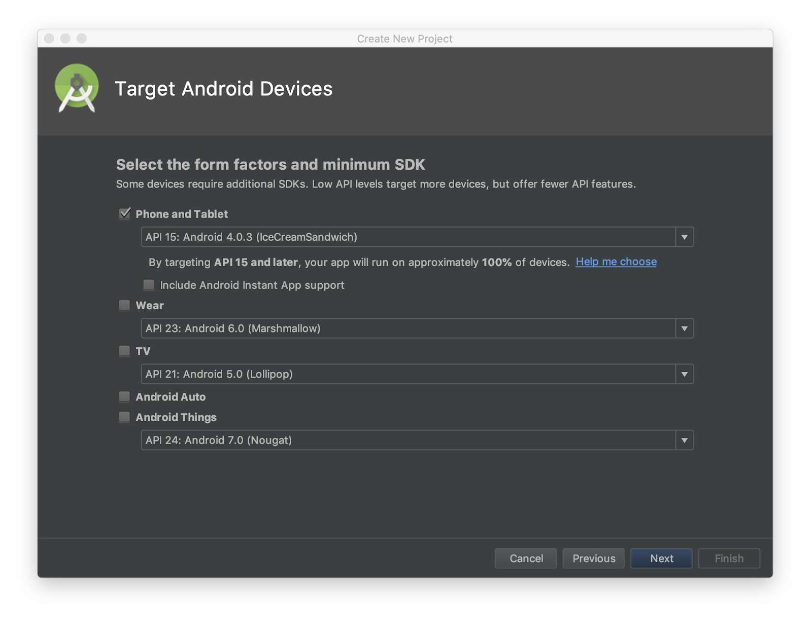
Ismai Pehlai sai muntakhib chezon ko rakh kr Next par click kren.
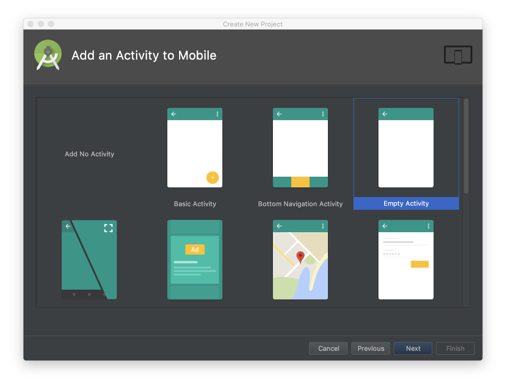
Yaha Empty Activity muntakhib kren aur Next par click kren. Iskai bad muntakhid krda settings rehnnai dein aur Finish par click kren.
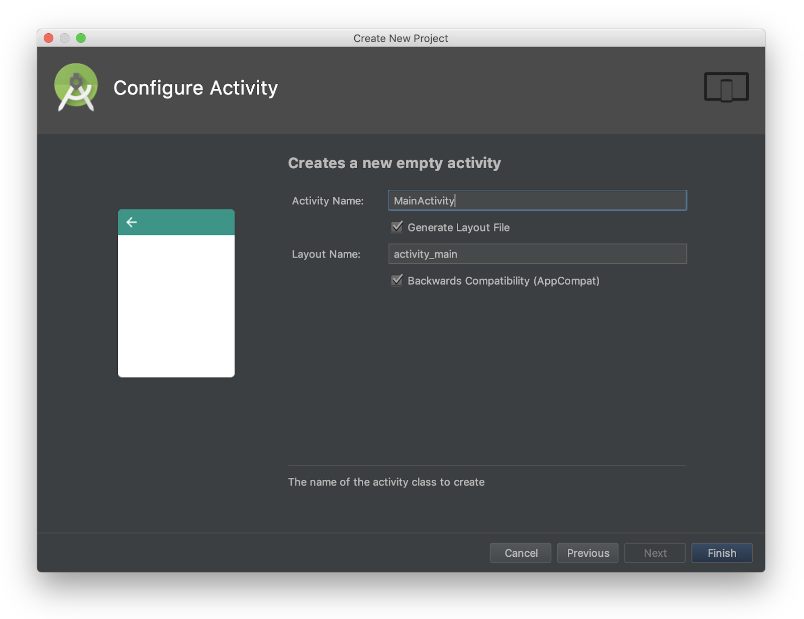
Tarteeb dein Build.gradle ko
Is marhalai mai ap is cheez ko yaqeeni banaingai k ap ki build.gradle file Google Play Services kai usi version ki istemaal krrahe ho jismai Mobile Vision API ki sahulat di gai hai. Iskai lia apko build.gradle ko sahe krna hoga.
Android Studio mai kholen Gradle Scripts node kholen aur select kren build.gradle (Module: app)
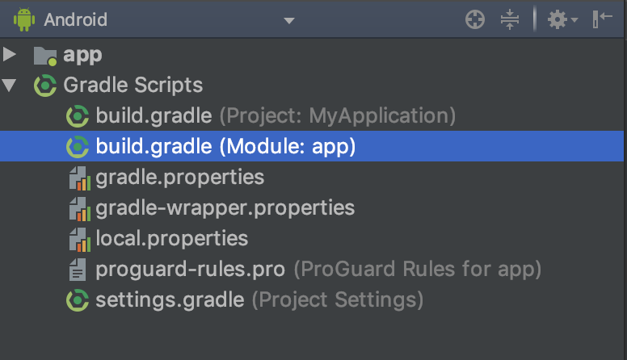
Isko click krnai k bad jo build.gradle ki file open hoge uskai nechai scroll kar k jain jaha code kuch is trha ka hoga
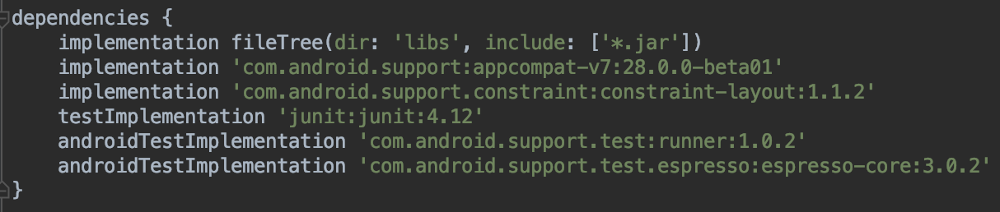
Ismai apko Google Play Services ki dependency is trha add krni hai
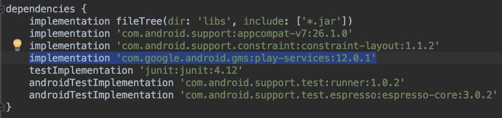
Agar apko kahen nishandahe dikhai jismai kuch is trha sai likha ho 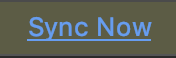 tou uspai click kren wrna Sync Project with Gradle Files  kai is icon p click kren.
kai is icon p click kren.
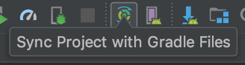
Google Play Services ko Update kren
Google Play Services aksar update hoti rehti hain aur ye codelab is chez ko madde nzar rakh k banani gae h k aap k pas haal he mai released version mojood hai. Naya version download krnai k lia Android Studio mai Tools > Android > SDK Manager par click kren.
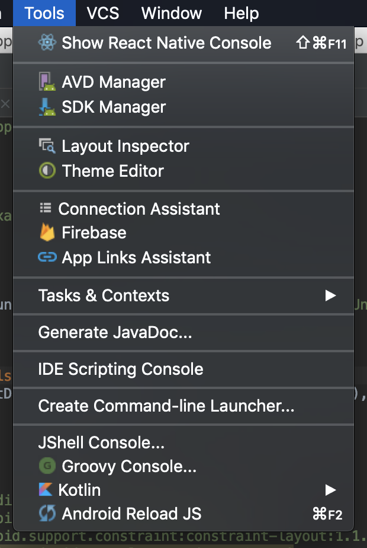
Iskai bad jo window apkai samnai aige usmai SDK Tools par click kren aur waha Google Play Services dhondain aur dekhen k uska version 26 ya ussai ziyada ho.
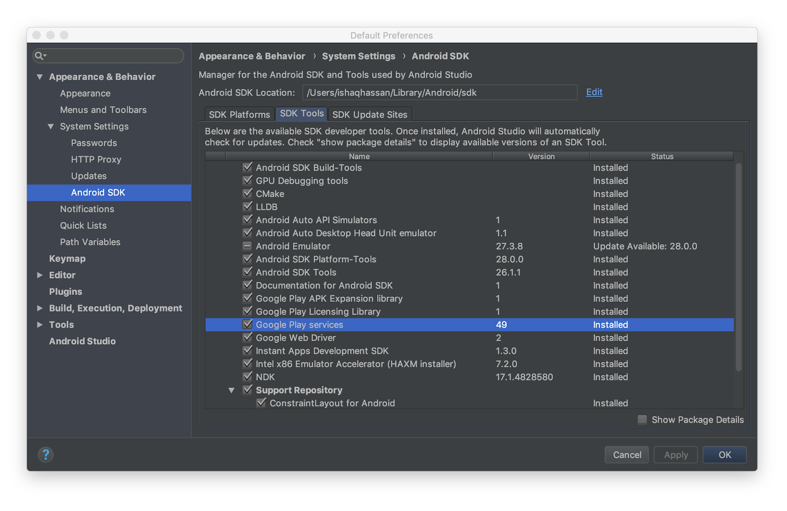
Banain aik bunyadi UI
Ab Jabkai apki app puri trha tarteeb mai achuki hai, ab humai aik UI (User Interface) tarteeb dena h jis ki madad sai user Face Detect kara sakai aur tasweer kai uper box dikha sakai jaha face ho.
Android Studio mai kholen res folder kholen aur usmai layout ka folder kholen jismai activity_main.xml ki file hoge, usai khol len.
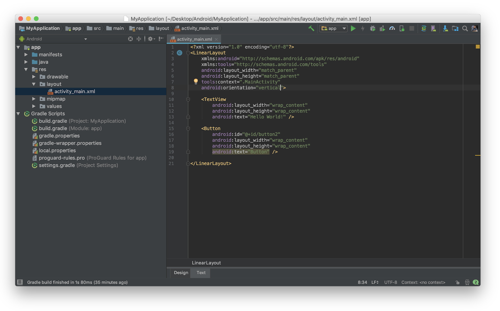
Is file mai likhai huai code ko is code sai tabdeel kren
<?xml version="1.0" encoding="utf-8"?>
<RelativeLayout
xmlns:android="http://schemas.android.com/apk/res/android"
xmlns:tools="http://schemas.android.com/tools"
android:layout_width="match_parent"
android:layout_height="match_parent"
tools:context=".MainActivity">
<Button
android:layout_width="wrap_content"
android:layout_height="wrap_content"
android:text="Process"
android:id="@+id/button"
android:layout_alignParentTop="true"
android:layout_alignParentStart="true" />
<ImageView
android:layout_width="wrap_content"
android:layout_height="wrap_content"
android:id="@+id/imgview"/>
</RelativeLayout>Ye code apko aik loading aur uskai bad Image processing dikhai ga, jo k ImageView mai aai ge.
Apni AndroidManifest.xml ko Edit kren
Apko ab AndroidManifest.xml khol kr usmai ye line add krni hoge.
<meta-data
android:name="com.google.android.gms.vision.DEPENDENCIES"
android:value="face" />Jo k kuch is trha hoge
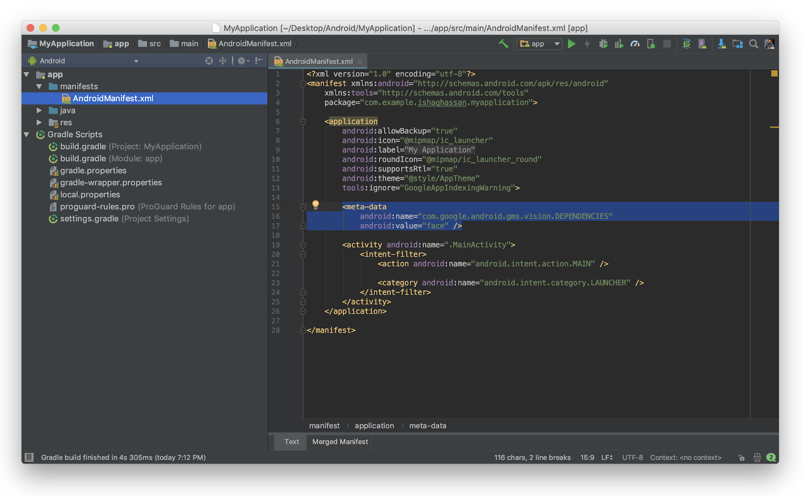
Ye code is baat ko yqeeni banata h k Face Detection ko istemaal krnai ki tamaam sahuliat mojood hain ya nh.
Apni app mai Face Detection add kren
Amouman aap pictures camera sai laitai hain magar ye treeqa istemaal krnai k lia thora aur code use krna hota hai jo k aap agai kai steps mai daikhingai. Filhal cheezon ko asaan rakhnai k lia humnai apki app mai rakhe hui aik picture istemaal ki hai.
Ye rahe wo Picture:
Picture - "Woman and a chiwawa dog" Peter van der Sluijs ki janib sai li gae hai, jo k mojood hai CC 3.0 license kai tehet, yaha sai li gae hai.
Is Picture ko save kren res/drawable kai folder mai aur iska naam rekhen test1.jpg, apko dikh jaiga k Android Studio us image ko accessible bana dega resources mai R.drawable.test1
Ab jab k apkai pas image aachuki hai, tou ab aap apni app ko code krna churu krsaktai hain!
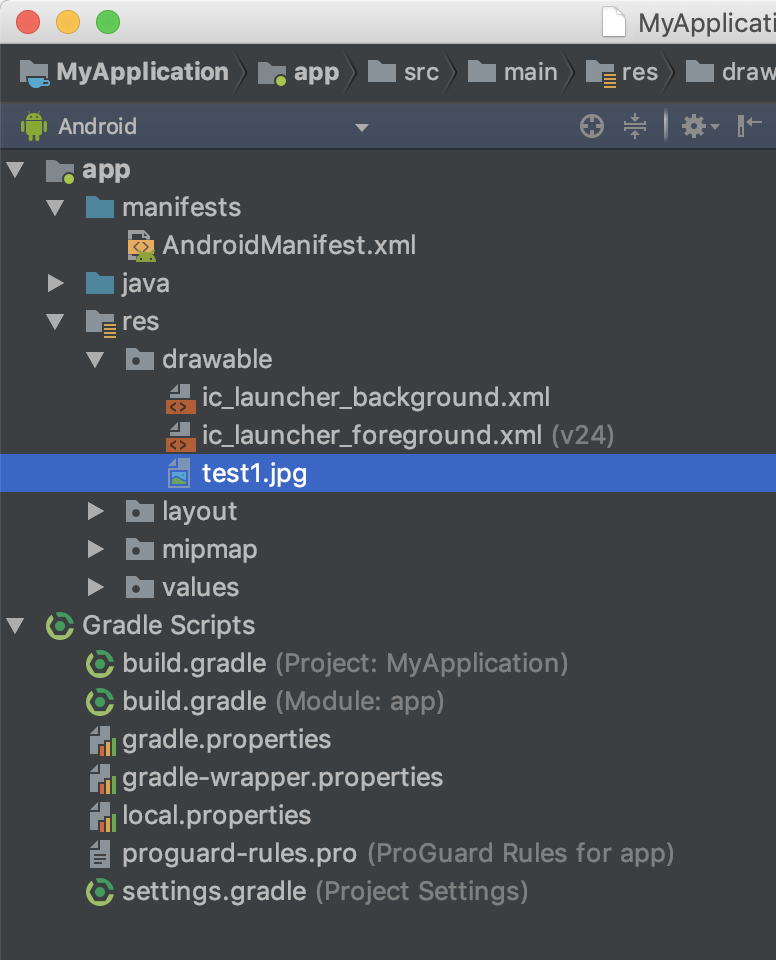
Is application mai sirf aik he button hai jo image ko load krega aur iskai saath saath image ko process b kraiga Face Detectionn k lia. Ain daikhtai hainn ye kesai code krna hai:
Includes (Shamholiat)
Agar apko zarorat ho k ye app kon kon si Classes/Packages use kr rahe hai tou uskai lia ye Imports dia gai hain
import android.support.v7.app.AppCompatActivity
import android.os.Bundle
import android.app.AlertDialog
import android.graphics.Bitmap
import android.graphics.BitmapFactory
import android.graphics.Canvas
import android.graphics.Color
import android.graphics.Paint
import android.graphics.RectF
import android.graphics.drawable.BitmapDrawable
import android.widget.Button
import android.widget.ImageView
import com.google.android.gms.vision.Frame
import com.google.android.gms.vision.face.FaceDetectorButton ko code sai jorna
Apni MainActivity.kt kholen aur usmai onCreate kai function mai ye code add kren:
val button:Button = findViewById(R.id.button)
button.setOnClickListener {
}Ye code hamarai Button ko click krnai par honai walai kam ko sambhalai ga. Jismai humai image ko load krana hai, process krna hai Face Detection k lia aur jaha b Chehra (Face) milai waha red rectangle banana hai.
Image ko Lana
AIn image ko load krtai hain. Hum Image tabdeel krnai walai hain (Red Rectangle banai walai hain jaha b Chehra (Face) milai), iskai lia humai bitmap ko mutable (Tabdeel hosaknai wala) bananna hoga. Ye uskai marahil hain - Pehlai humai ImageView ka Refrence (Hawala) lena hoga bad mai istemaal krnai k lia. Uskai bad BitmapFactory istemaal krni hoge Image ko load krnai k lia. Yad rahai k Image humai R.drawable.test1 sai mil sakti hai. Agar aap nai koi dosra naam istemaal kia hai tou apko test1 ko apnai dia gai naam sai tabdeel krna hoga. Auto Complete jo k Android Studio mai mojood hai ismai apka madadgar sabit hoga.
val myImageView:ImageView = findViewById(R.id.imgview)
val options = BitmapFactory.Options()
options.inMutable = true
val myBitmap = BitmapFactory.decodeResource(
applicationContext.resources,
R.drawable.test1,
options)Paint kai Object ko banana Draw krnai k lia
Ab apko Paint ka object banana hoga jo k Image par draw kar saktain hon. Ye banai ga aik Stroke (Line) 5 Pixel ki jiska matlab ye hai k jab ye shape (Rectangle) banai ga tou ye usai bharai ga nh sirf uskai atraaf mai 5 Pixel ki line bana dega jiska color Red hoga.
val myRectPaint = Paint()
myRectPaint.strokeWidth = 5f
myRectPaint.color = Color.RED
myRectPaint.style = Paint.Style.STROKECanvas banana Draw krnai k lia
Ab create krni hai aik arzi Bitmap asli Bitmap ko istemaal krtai huai jissai hum aik naya Canvas banaingai jo k uspai draw krega.
val tempBitmap = Bitmap.createBitmap(myBitmap.width, myBitmap.height, Bitmap.Config.RGB_565)
val tempCanvas = Canvas(tempBitmap)
tempCanvas.drawBitmap(myBitmap, 0F, 0F, null)Face Detector banain
Humai naya FaceDetector object banana hoga Builder ki madad sai.
Jesa kai humnai apni AndroidManifest.xml mai code add kia tha jo humai Face Detection ki zarori chezen hamarai istemaal krnai sai pehlai he faraham krdega magar ye b imkaan hai k jis waqt humari app kaam krai. Google Play Services tyyar na hon Face Detection k lia. Islia humai pehklai Detector ko test krnna hoga k wo tyyar hai ya nh. Agar wo is waqt tyyar nh tou humai user ko batana hoga k usai sabar krna hoga jab tak wo download ho jai ya Internet ki sahulat muyassir krni hoge ya phir apni Device mai jaga (Storage) khali krni hoge
val faceDetector = FaceDetector.Builder(applicationContext).setTrackingEnabled(false).build()
if (!faceDetector.isOperational) {
AlertDialog.Builder(this).setMessage("Could not set up the face detector!").show()
return
}Dehan rahai : Ye codelab is cheez ko madd e nazar rakh k banai gai h k aap aik Image pai Face Detect karwa rahai hain, agar apka maqsad Fcaes (Chehron) ko video ya camera sai Live Preview mai detect krnawana hai tou apko tracking ko enable krna hoga faceDetector kai object par trackingEnabled ko true kr k.
Chehrai ki pehchan kren
Ab hum tyyar hain Face Detect (Chehrai ko Pehchanai) kai lia. Ye kafi asaan hai, aik Frame banain Bitmap ko istemaal krtai huai aur detect method call kren FaceDetector kai object par.Isi Frame ko hum use kringai SparseArray lanai k lia face objects ki.
val frame = Frame.Builder().setBitmap(myBitmap).build()
val faces = faceDetector.detect(frame)Banain Rectangles Chehron par
Is marhalai par apkai pas ab aik SparseArray hai faces(Chehron) ki. Ispar aap iterate kar k pata kar saktai hain k konsa face Image mai kis jaga par hai jiski madad sai aap Rectangle ko bata saktai hain k kaha draw hona hai. Ye API (Application Programming Interface) apko deti hai x,y coordinates top aur left corner kai, iskai saath saath width aur height bhe. Rectangle ko chaheyai hota hai top,left,bottom aur right corners, islia apko hisab lagana hoga bottom aur right corners ka top,left aur with aur heght ki madad sai. Code nechai dia gaya hai:
for (i in 0 until faces.size()) {
val thisFace = faces.valueAt(i)
val x1 = thisFace.position.x
val y1 = thisFace.position.y
val x2 = x1 + thisFace.width
val y2 = y1 + thisFace.height
tempCanvas.drawRoundRect(RectF(x1, y1, x2, y2), 2f, 2f, myRectPaint)
}
myImageView.setImageDrawable(BitmapDrawable(resources,tempBitmap))Nataij
Ab apko sirf app chalani hai. Issai aap daikhingai k test1 image mai ab women (Khatoon) kai chehrai par Rectangle bana hua hai jab kai dog kai chehrai par nahe. Issai ye baat sabit hoti hai k FaceDetector sirf insaano kai chehron par he kaam krega.
Is code lab mai apko bataya gaya k aik bunyadi app kesai banani hai jismai bunnyadi sholat ho cheron ko pehchannai ki jisko aap agai istemaal kr saktai hain.